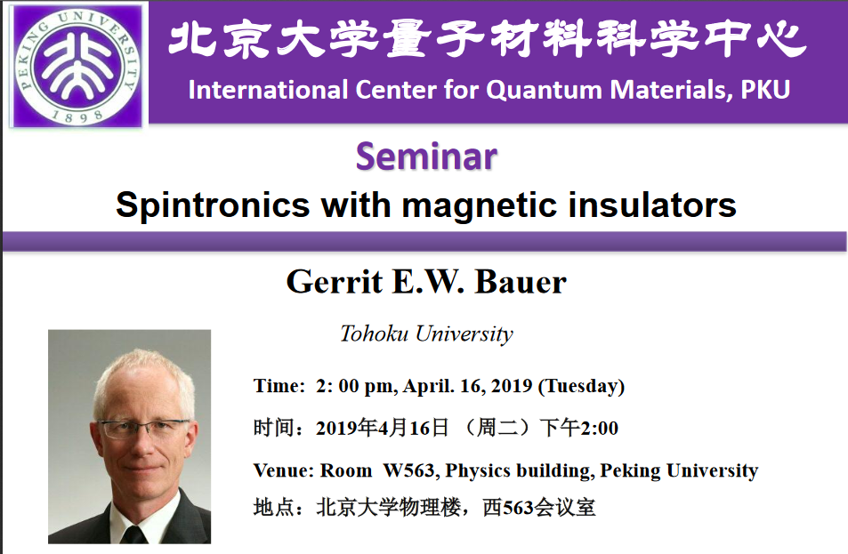
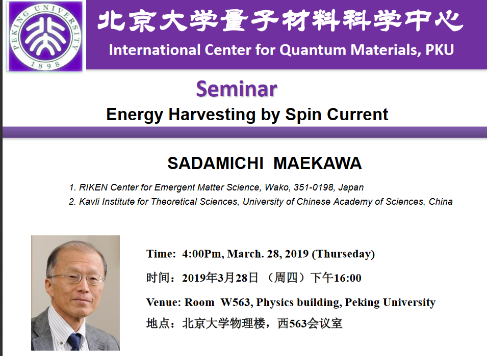
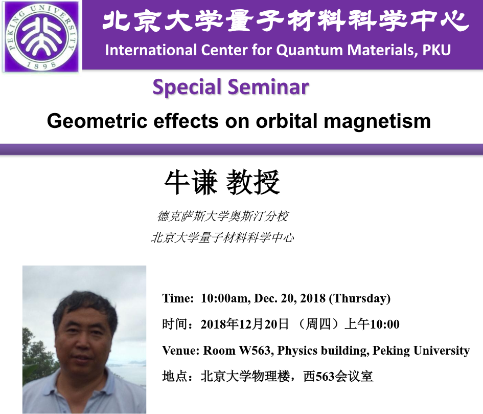
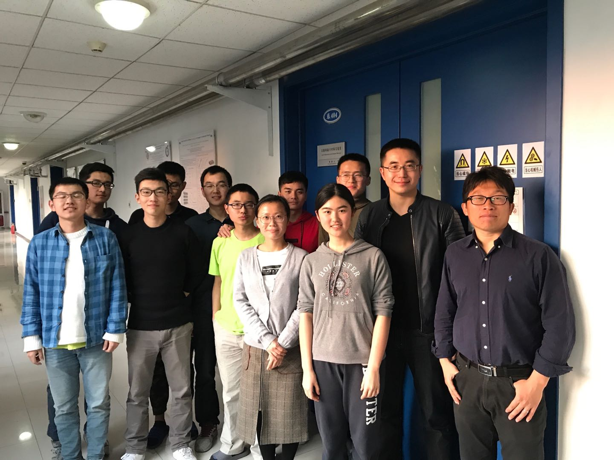
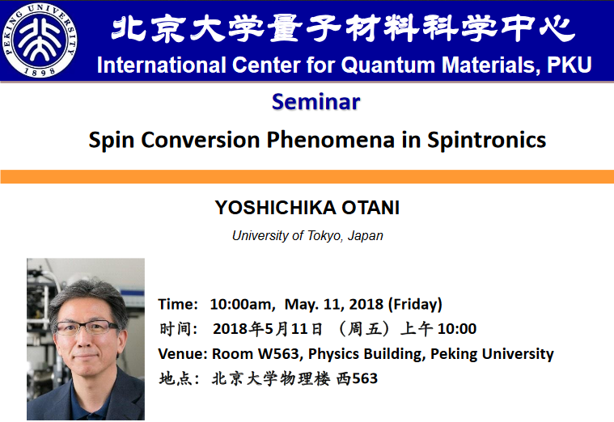

Recent News
 2019
2019
Apr. 16, 2019 Seminar
Prof. Gerrit E.W. Bauer visited our lab and gave a talk on " Spintronics with magnetic insulators".

Mar. 28, 2019 Seminar
Prof. Sadanichi Meakawa visited our lab and gave a talk on " Energy Harvesting by Spin Current".

Mar. 11, 2019 Paper Published!
Congratulations to Yang Ma! Our collaborated work with Prof. Jirong Sun (Insitute of Physics, Chinese Academy of Science), "Thermal Spin Injection and Inverse Edelstein Effect of the Two-Dimensional Electron Gas at EuO−KTaO3 Interfaces", has been published in Nano Letters. Link to the paper.
Feb. 7, 2019 Paper Published!
Congratulations! Wenyu Xing's paper titled "Magnon Transport in Quasi-Two-Dimensional van der Waals Antiferromagnets" has been published in Physical Review X. Link to the paper.
2018
Dec. 26, 2018 Seminar
Prof. Yue Zhao from Southern University of Science and Technology visited our lab and gave a talk on "Whispering Galleries in Circular Graphene Resonators ". Link
Dec. 20, 2018 Seminar
Prof. Qian Niu visited our lab and gave a talk on " Geometric effects on orbital magnetism
".

Oct. 17, 2018 Seminar
Prof. Mathias Kläui visited our lab and gave a talk on "Spin Transport in insulating ferri- and antiferromagnets–enabling antiferromagnetic spintronics
".
Oct. 11, 2018 Seminar
Prof. Robert Buhrman visited our lab and gave a talk on "Spin-Orbit Torques
".
Oct. 2, 2018 Seminar
Prof. Can-Ming Hu visited our lab and gave a talk on "Cavity Spintronics
".
Sept. 26, 2018 Seminar
Prof. Chih-Huang Lai visited our lab and gave a talk on "Multi-level state and unidirectional switching driven by spin-orbit torque
".
Sept. 12, 2018 Paper Published!
Congratulations to Yu Yun and Yang Ma!
Our collaborated work with Prof. Jirong Sun (Insitute of Physics, Chinese Academy of Science),
"High-Mobility Spin-Polarized Two-Dimensional Electron Gases at EuO/KTaO3 Interfaces",
is published in Physical Review Letters. Link to the paper
Sept. 10, 2018 Seminar
Prof. CHEN Jingsheng visited our lab and gave a talk on "Novel Materials in spin orbital torque based current induced magnetization switching
".
July. 16, 2018 Award!
The 2016 IUPAP Young Scientist Prize in the field of Magnetism was presented to Prof. Wei Han at International Conference on Magnetism (ICM) at San Francisco on July 16, 2018.

Left: Prof. Wei Han, Right: Prof. Dr. Burkard Hillebrands, Chair IUPAP C9 Commission (magnetism)
July. 01, 2018 Dr. Yu Yun's new job!
Dr. Yu Yun has accepted a postdoc position in university of Nebraska-Lincoln. Congratulations! We wish Yu the best luck in his research career.

June. 14, 2018 Seminar
Prof. Amalia Patanè visited our lab and gave a talk on "From epitaxy to science and processing technologies of novel van der Waals crystals
".
June. 13, 2018 Paper Published!
Congratulations! Yunyan Yao's paper titled "Probe of Spin Dynamics in Superconducting NbN Thin Films via Spin Pumping " has been published in Physical Review B. Link to the paper
June. 1, 2018 Paper Published!
Congratulations to Qi Song!
Our collaborated work with Prof. Jing Shi (University of California, Riverside),
"Dirac surface state–modulated spin dynamics in a ferrimagnetic insulator at room temperature",
is published in Science Advances.
May. 30, 2018 Seminar
Prof. See-hun Yang visited our lab and gave a talk on "CHIRAL SPINTRONICS
".
May. 25, 2018 Seminar
Prof. Igor Žutić visited our lab and gave a talk on "Magnetic Proximity Effects in Two-Dimensional Materials roximitized Materials
".
May. 23, 2018 Seminar
Prof. Hongxin Yang visited our lab and gave a talk on "First-principles study of Dzyaloshinskii-Moriya Interaction
".
May. 22, 2018 Paper Published!
Congratulations! Prof. Wei Han's review paper titled "Quantum materials for spin and charge conversion " has been published in npj Quantum Materials. Link to the paper
May. 11, 2018 Seminar
Prof. Youshichika Otani visited our lab and gave a talk on "Spin Conversion Phenomena in Spintronics
".

Apr.13, 2018 Paper Published!
Congratulations! Wei Yuan's paper titled "Experimental signatures of spin superfluid ground
state in canted antiferromagnet Cr2O3 via nonlocal
spin transport " has been published in Science Advances. Link to the paper.
Apr. 9, 2018 Seminar
Prof. Ke Zhou visited our lab and gave a talk on "Pursuing novel electronic states in two-dimensional chalcogenides, perovskite oxides, and their heterostructures
".
Mar. 27, 2018 Paper Published!
Congratulations! Yu Yun and Yang Ma's paper titled "Role of La doping for topological Hall effect in epitaxial EuO films " has been published in Physical Review Materials. Link to the paper
March. 6, 2018 Invited talk
Prof. Wei Han gave an invited talk in a symposium at the 2018 APS March meeting in Los Angeles.
The symposium is titled "Topological Materials for Conversion between Charge and Spin Currents", including five invited speakers: Albert Fert, Yuki Shiomi, Yoshichika Otani, Wei Han, and Nitin Samarth. See Prof. Wei Han's presentation at this link
Room East 404/504, Physics Building, No. 209 Chengfu Road, Haidian District, Peking University